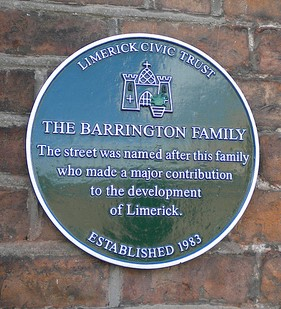
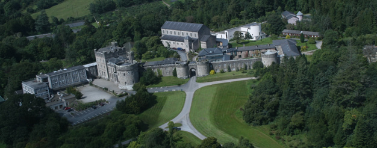
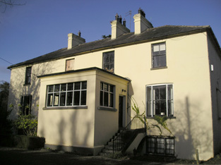
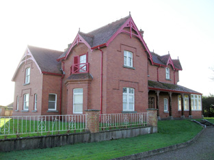
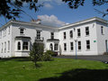

The Barrington Family
The Barringtons settled in Limerick City at the end of the 17th century. Francis Barrington had come to Ireland with his cousin, Sir John Barrington, who had served in Cromwell's army. Francis settled in Limerick and was buried in St Mary's Cathedral in 1683.
Benjamin Barrington is listed as the sheriff of Limerick in 1714. Before him, his father Samuel had set up a business as a clock maker, a trade Benjamin continued after he died in 1693. Benjamin also ran a copper foundry and his son, also Samuel, became sheriff in 1729 and was later an alderman. Benjamin's eldest son, Matthew, would be the father of Joseph.
By the late 1700s, the family lived on Charlotte Quay where Joseph Barrington had a pewter works. In the 1820s, the Barringtons bought the Cappercullen estate from the Prestons, who were relatives of the Barons Carbery. Glenstal was later built on this property.
Joseph Barrington was created a baronet in 1831. An extremely wealthy and influential family, at one stage, his son, Sir Matthew, 2nd Baronet, owned 16 townlands in the parish of Abington, barony of Owneybeg, County Limerick; property in the Liberties and City of Limerick and in the parishes of Caheravally, Caherconlish, Cahernarry, Clonkeen and Donaghmore, barony of Clanwillliam and Uregare, barony of Coshma.
Barrington Street
The Barrington family plaque in the city was established in 1983. The street was named after the family, as they had made such a major contribution to the development of Limerick. The family set out to build Barringtons' Hospital in 1829. It was the intention of Joseph to build this hospital as a charitable institution for the poor of Limerick but it was Matthew who was credited for both the financial and construction efforts behind the project.
The Barringtons purchased the site for the hospital on George's Quay not far from the old Baal's Bridge, which was demolished in 1830 and the present bridge opened in 1831. The hospital has a clock mounted on the roof with three circular windows. That clock was the first illuminated one in the south of Ireland.
| Some of the properties associated with the Barrington family | ||||||
|---|---|---|---|---|---|---|
|  | Glenstal | A Norman-Revival castle built for the Barringtons as the main seat of the family. Building began in 1837 but was not fully completed until the 1880s. It became the seat of Sir Charles Burton Barrington in 1894. Now known as Glenstal Abbey, it is a boys' boarding school run by the Benedictine monks, who took it over in 1927. | ||||
|  | Clonkeen House | Clonkeen House was enlarged late in the 19th century and it became Sir Matthew Barrington's principal residence as Glenstal was being constructed. By 1906, Croker Barrington, second son of Sir Croker Barrington, was the occupant of a mansion house at Clonkeen. | ||||
|  | Barrington's Bridge House | A second located property near Clonkeen House was named as Barrington's Bridge House. This property is locally known as the Red House. | ||||
|  | Tivoli Cottage | Tivoli Cottage was occupied by a Major Wheeler and held from Sir Matthew Barrington. Since 1952, it has been operating as a secondary school known as Villiers. | ||||